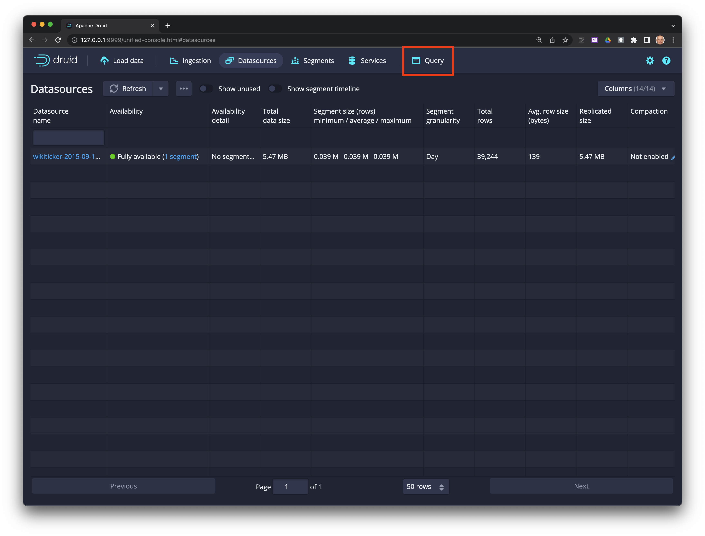
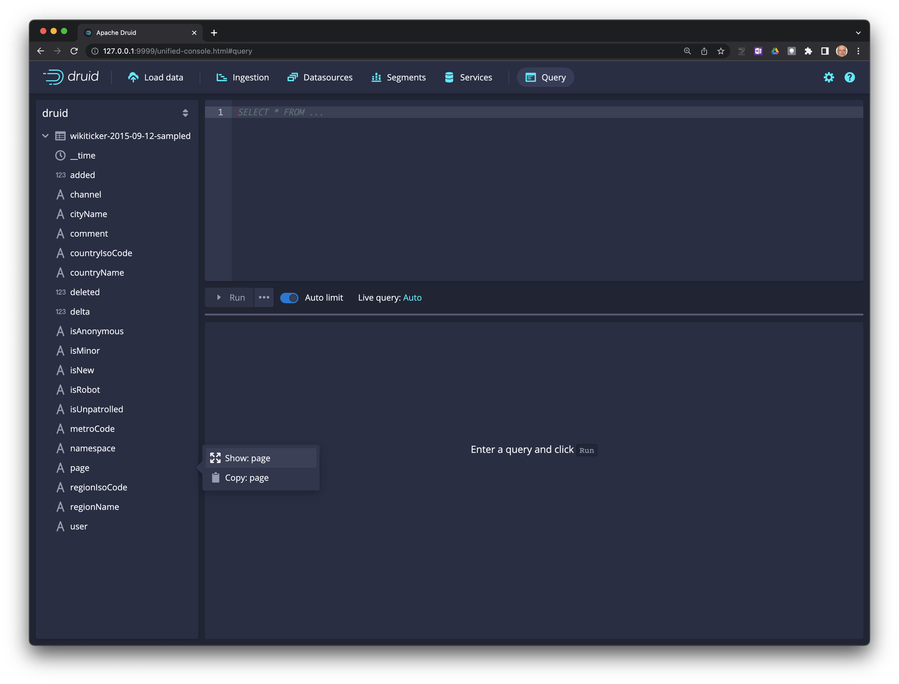
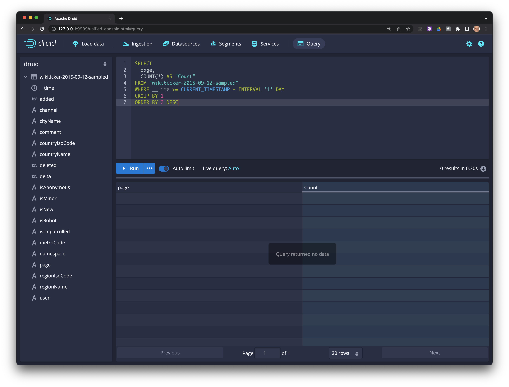
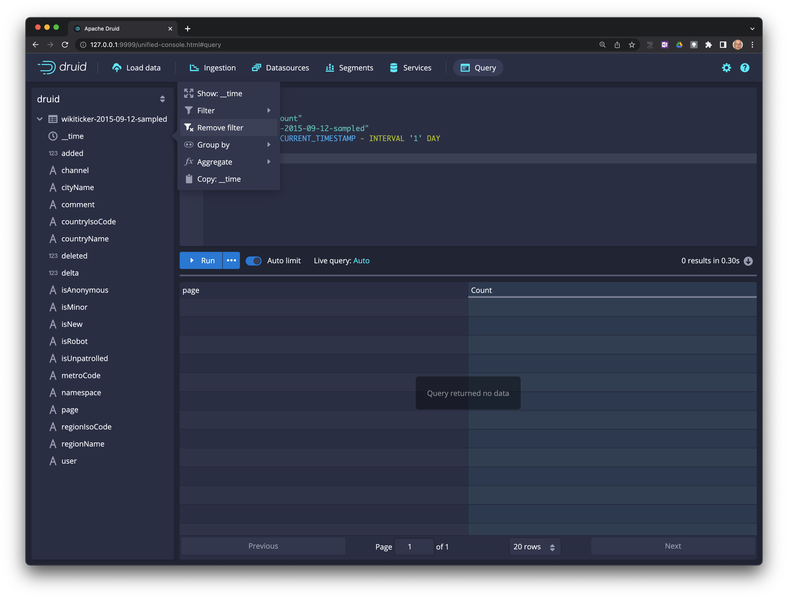
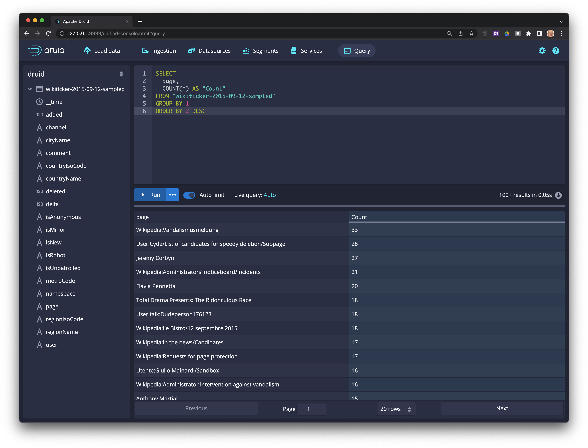
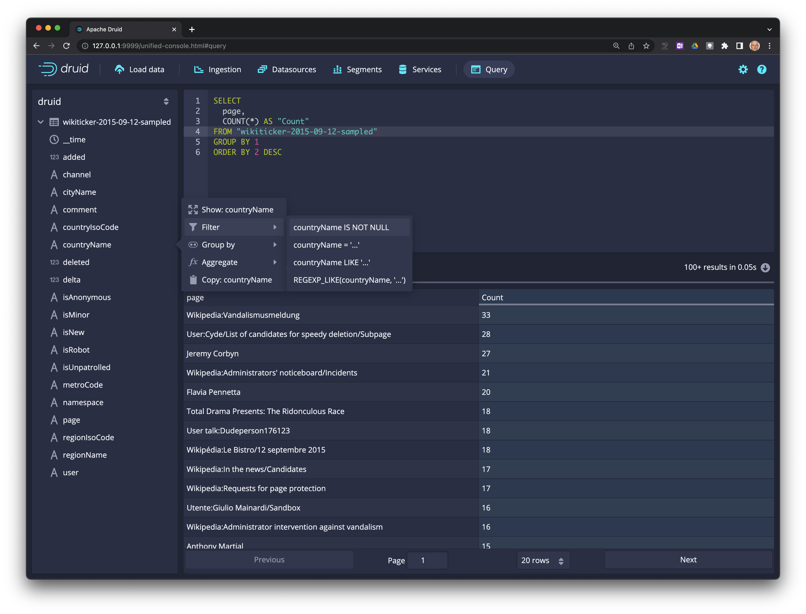
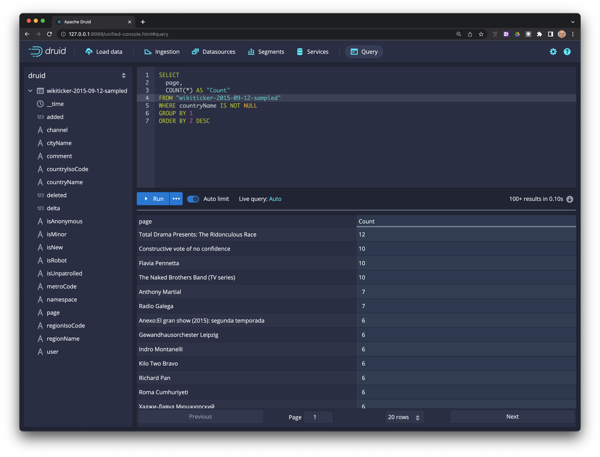
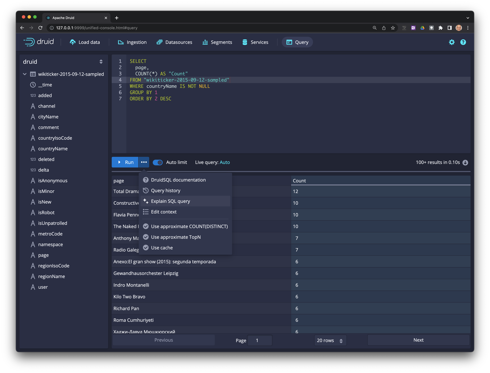
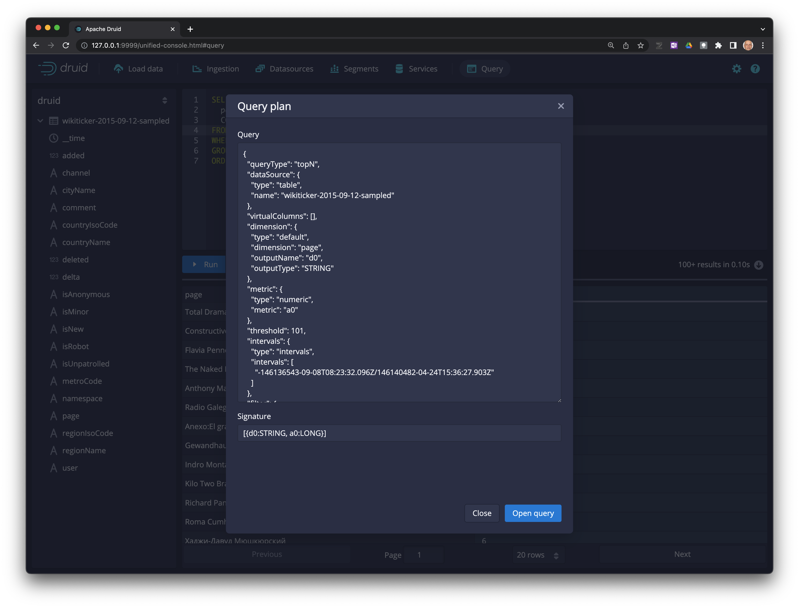
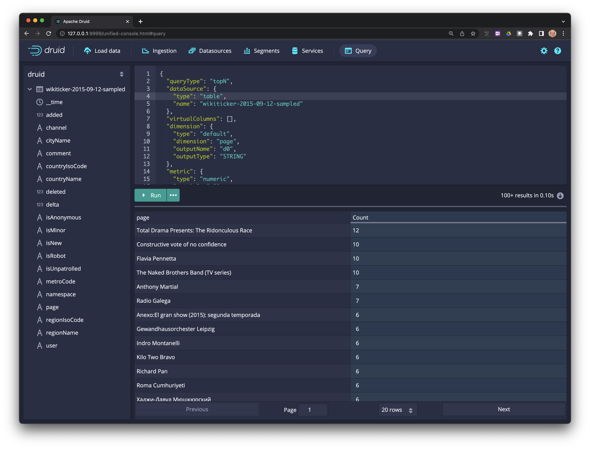

Creación de queries desde la consola
Ultima modificación: Mayo 24, 2022
Selecccione
Queryen la barra principal.

En los campos de la fuente de datos (panel izquierdo), seleccione
page->Show:page.

La acción anterior generará una consulta base que puede ser editada.

Seleccione
__timeyRemove filter

Ejecute la consulta haciendo click en
Run

Adicione un nuevo filtro
countryName IS NOT NULL

Haga click en
Runpara ejecutar la consulta.

Haga click en los tres puntos
...y seleccioneExplain SQL query

La consulta puede ser editada haciendo click en
Open query

